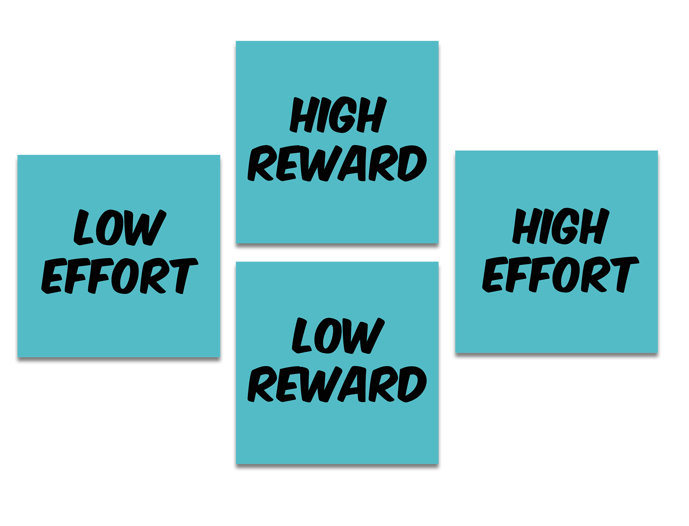
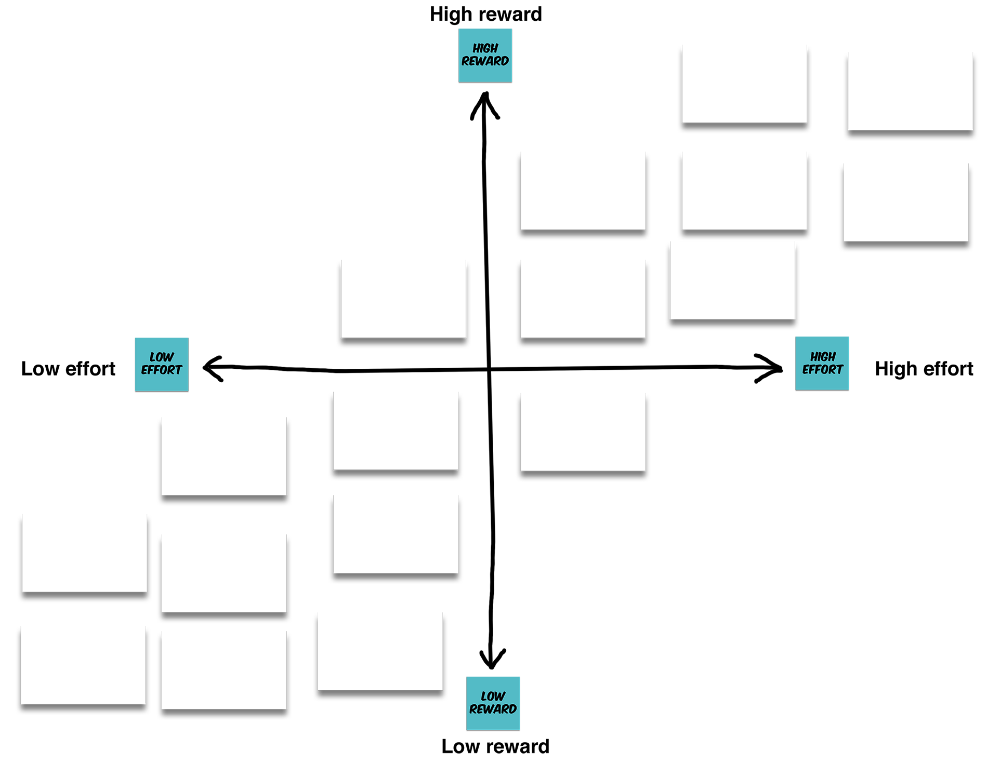
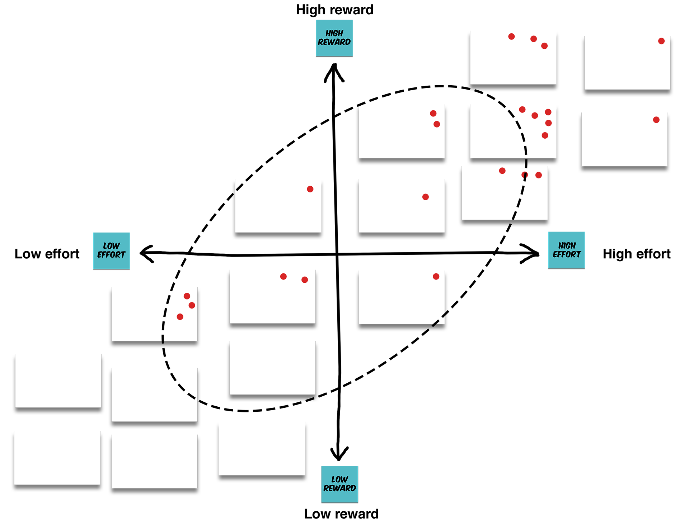
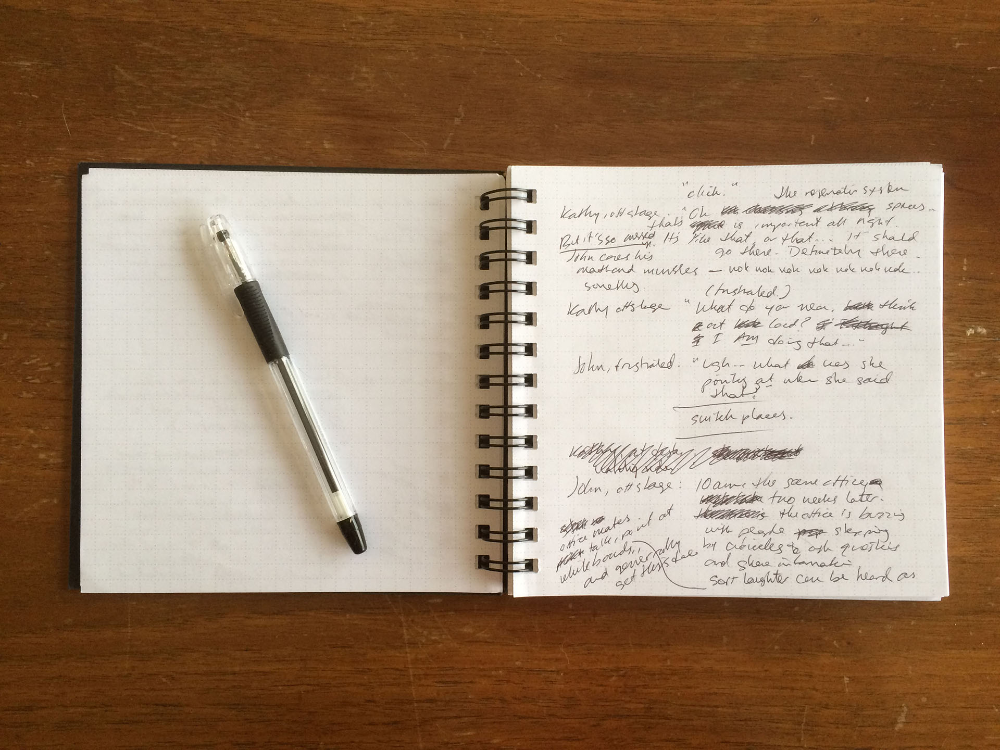

Who are we?
John Jung
Kathy Zadrozny
John: Programmer/Analyst in the Digital Library Development
Center at the University of Chicago Library. Graduate of the Design Methods
program at the Institute of Design in Chicago.
Kathy: Web Developer and Graphic Design Specialist in the
Digital Library Development Center. In addition to her work at the library
Kathy is a co-founder of the Letter Writers Alliance- an organization with over
7,000 members worldwide, dedicated to keeping the tradition of letter writing
alive.
Our work at the DLDC tends to center around web design and
development, currently we're working towards a new library website to be
launched this summer.
Introduce yourself to the table.
Draw your favorite food
What's your name?
Where do you work?
Agenda: Research
1:30-1:40 (10 min) Research overview
1:40-1:55 (15 min) Research discussion
Agenda: Generating Ideas
1:55-2:15 (20 min) Generating Ideas
2:15-2:40 (25 min) Ranking and choosing ideas
2:40-2:50 (10 min) Break
Kathy: Then we'll draw to generate ideas- we'll make quick
sketches to think through different ways to respond to that problem.
Agenda: Presentations
2:50-3:00 (10 min) Overview.
3:00-3:45 (45 min) Develop presentations.
3:45-3:55 (10 min) Break
3:55-4:40 (45 min) Presentations and discussion.
4:40-4:45 (5 min) Summary, more resources, going further.
Kathy: Then we'll make short presentations to tell the
group about the idea you chose and why it solves a problem.
Finally, we'll wrap up with some resources you mind find
helpful if you like doing this and want to go further.
Any questions before we get started?
https://www.flickr.com/photos/iitdesign/albums/72157624095302884
John: These Institute of Design students are designing tea
kettles. Check out the messy table, with different kinds of teapots or coffee
makers. They're going to look at different existing solutions for making tea,
see how they work, and try to come up with something new.
Right now they're presenting research they did about how
people prepare and drink tea, and how tea fits into their lives.
Including research into your decision making process is
important. It's going to help keep your work grounded. Although wild, fun
ideas are great for learning, in a real world situation you'll want to be sure
you're solving a problem that actually exists.
https://www.flickr.com/photos/iitdesign/albums/72157624095302884
John: Here, two students are talking through lots of different
ideas for their design. By having different materials around, like glass,
metal, or plastic, they can quickly experiement with the kinds of materials
that might get used in the final product. As a side note, one of my favorite
things about this picture is the chart on the wall in the background. It
contains a bunch of tea-related puns- including t-shirts, teepees and t-rex.
These might just be a tangent, or they might provide inspiration for the final
project. Because they're coming up with a lot of different ideas it's fine that
some of them are a little out there.
https://www.flickr.com/photos/iitdesign/albums/72157624095302884
By now the students have combined the work they did in their
research and in their idea generating sessions to narrow in on specific
directions for their work. Now the prototypes can start to get refined,
and the students can feel confident that they're refining ideas that
solve real problems, because of their research, and that explore the
best possible solution, because they explored a range of possible solutions
before committing to one.
Now that they have a prototype that looks more "real", they can
show it to potential users and get feedback on it. That feedback becomes the
input to another round of the process, where they can refine existing ideas or
come up with new ones.
One of the things I like about this is that the teapot in the
front looks a bit like a teepee. I'm not sure if that's a happpy accident or
if it was on purpose.
Today we're going to be making a "fuzzy front end" prototype-
we'll be exploring the first part of this process.
The fuzzy front end is the part of the design process where we know we have
a problem to solve, but we haven't yet decided on a specific way to solve the
problem- we're still thinking through options. The solution might be a digital
interface, like a website or an app for a smart phone, tablet, or even a smart
watch. But it could also be some kind of physical object or in-person
service.
To go through the entire prototyping process takes more time
than we have, and it takes people with traditional design skills to make
polished objects, interfaces, or documentation for services. Fortunately
though, the beginning of the process of designing something doesn't require as
much traditional design skill- so we can easily work with people who have other
skill sets and backgrounds.
Although we'll be working fast, with only a little extra work
you could polish up the kinds of sketches you make today and show them to
patrons to see what they think, or you build off of the narrative you came up
with in your skit to talk through potential solutions in a little more
detail.
Our sample problem:
Grocery stores and healthy eating
Kathy: Our sample problem is about helping grocery stores
encourage healthy eating. We wanted to give you something to work on that
isn't directly related to libraries, so you'd have a chance to work on
something outside of your comfort zone.
Why this topic? Like libraries, grocery stores have an
information architecture. They use samples, endcaps and other displays to
introduce customers to things they didn’t necessarily come into the store for.
Grocery stores are pretty good at this.
Libraries might often find themselves in a position where they'd
like patrons to use more of their services, or to use their services more
deeply.
We hope that by spending a few hours prototyping grocery store
displays, apps and services that you will have new ideas about ways to
introduce library patrons to new services as well.
How might we...
create displays, apps and services that help a grocery store's customers make healthier food choices?
Our design process
Research.
Generate ideas.
Choose a solution.
Demonstrate your solution.
Kathy: with this goal in mind, we'll be using this design process. [explain].
To dig into the topic of food and eating choices, John is going
to talk through the research we are going to solve our problem.
Cornell Food Choice Research Group
http://www.human.cornell.edu/dns/foodchoice/
(Kathy hands the research out.)
One of the first things we found is the Food Choice Research
Group at Cornell. We originally considered doing some user testing ourselves to
give you a starting point. However, by spending a few hours looking at work that
other people have done, we think we found some models here that are much better
than what we would have come up with if we had spent a few weeks testing users
ourselves. The lesson here is that in this case, spending a few hours looking
for other people doing research like this was time well spent.
Let's dig into some of their models now.
http://www.human.cornell.edu/dns/foodchoice/upload/Food-Choice-Scripts-Model-2.pdf
First, they've got two different alternate scripts, that describe a
narrative for how different types of families choose what to eat for dinner, and
then how they go about preparing the meal and having it. One of the scripts here is
for a family where one person cooks for everyone else, and the other is for families
who make their meals as a group. In the original research there are eight scripts
total. The others are really interesting too, but for the sake of playing with this
research I think these two are enough.
The research continues: samples
We also went into grocery stores to observe people
making food choices first hand. At first our plan was to count the number of
people who stopped at different kinds of store samples, for example, for either
fruit or cheese, to see if we could learn something about how grocery store
samples work. When we started talking to the people who give out samples we
changed strategies though- we found that talking with just a few people gave us
some really nice insights into how free samples work in the grocery store.
The lesson here is similar to what we learned before- asking
people who are really familiar with a subject is a great way to learn about it
quickly. And it was definitely faster than just counting the number of people
who walk by free fruit samples.
Choose the right place.
Find high-traffic locations near the front of the store or along busy paths.
We learned that it's important to choose the right place to
introduce people to something new.
Important displays are often located in the entryway of the
store, or along the most common path people use to find their way around the
store. For example, in my local Whole Foods, the entryway contains a sign
advertising the whole foods app, along with the weekly sale flyer and even
some displays for foods that are on sale. Just inside the door, in the produce
section, is a display with some really good but pretty expensive guacamole.
Displays often incorporate a table- it creates a place along the
path to stop. Compare this to an endcap for a sale item that doesn't have a table.
One woman used a shopping cart to create a mobile display- she
could walk up to people in line at the butcher counter and get them to try a
sample while they waited. While I watched she sold a lot of cottage cheese.
One woman said, "don’t bother putting the granola display next
to the granola—or even the milk. Put it along a path in the store that gets a
lot of traffic."
This is relevant in the world of libraries. When we've asked people
where they learn about new things at our library, they invariably say "signage
that was placed right by the entry control station."
Choose the right time.
This granola display was very successful before a big football game- it seemed like people were looking for an alternative to traditional game day snacks.
This is the woman with the granola stand advice from our last
slide. She also had good advice on timing- she gave out samples the weekend of a
big football game and managed to sell a lot of granola. People come into the
grocery store looking to solve an immediate problem- they need food for something.
If you offer something that solves their problem, you have a better chance of
convincing them to try something new that if it was totally random.
Again, this relates to the world of libraries. During finals week,
we've put on a coloring event for people to relax and unwind- it was very well
attended.
Match customer needs.
Live conversations let product reprentatives focus on a benefit like taste, health, or cost that might make sense to a specific shopper.
One of the reasons there are live people giving out samples is so that
they can figure out what you're looking for in a product, and then they can highlight
those aspects of the product to you. Yogurt might be tasty, good for you, or on sale-
a live person can figure out which of those things you're looking for.
Similarly, when it comes to signage and printed materials,
people see words they’re on the lookout for. If people are looking for things
without gluten, they’ll see the word "gluten" on the package. Other people
won’t know the word is there.
We observed this in libraries looking at the kinds of library news
stories people click on. When people know a little bit about a topic, they were
more likely to click to learn more.
“Would you like to try one?”
Often, people need a little encouragement to try something new.
One thing that most people giving out samples told us was that
many people need to be asked "would you like to try one?" before they would try.
Further user testing:
How do you define healthy eating?
How do you discover new foods?
How do you learn to prepare new foods?
Now: Last bit of research • Next: Generating ideas
For the sake of this workshop, I want us to accept that there
are a range of approaches to healthy eating- so no judgement. There is no
"single standard for healthy eating" for this class. For example, I try to
follow a "all things in moderation" approach, where I'll eat pizza but also
salad.
Kathy: my approach is about eating organic and non-processed things.
Prompt Cards
(John passes out "prompt" and "transforming idea" cards.)
Kathy: Because we're limited for time, we wanted to give you a
jumping off point to get started.
There are two different sets of cards: "prompt cards" and
"transforming idea" cards. One type of prompt card is "there's an app for that", where the idea starts off as an
app. The other is "saucy services", where the idea starts off as a service.
We provided two different kinds of prompts, because at
the early-prototyping stage a lot of things can change. You might decide you
want to make an app, or a website, or you might nudge your idea a bit and make
it an in-person service. In-person services often have digital components to
them. Don't feel restricted to just one thing.
The second set of cards is for "transforming ideas". We included
four ways to transform ideas. First, there are "digital component" cards- your ideas
can change from a smart phone app to an app for some kind of smart object or to
a website. They can also change from a digital thing to a thing that is non-digital.
You can change the kind of service your idea provides, by making it a
game or a way for people to learn something new.
You can also change what kind of values it appeals to, like the
cost of something or the health benefits of something.
Finally, you can change the audience for your idea- it can be for
kids, or adults, or seniors.
To give you an example of the idea generating process, John is oing to walk us through how he brainstormed off of one prompt card.
ExampleThere's an app for that
As an example, I chose "the mean bean" as my prompt. Originally, the mean bean was an app that
gave you "tough love" to help you make better food choices.
Thinking about the insight from the grocery store samples about
catching people at the right time... What if the grocery store tweeted tips
about healthy breakfast options for people who are just waking up?
Ok, now taking a transformation card- I should try to make the idea about
cost, saving money. Thinking about military stuff reminds me of WWII victory gardens...
Maybe the grocery store could give parking lot space to some boxed gardens- it would
make the parking lot attractive and the gardeners would be coming to the store all the time.
(Maybe they'd buy more stuff than usual, actually.)
It's important that there isn't too much detail in these drawings, actually.
I'm not worrying about the nitty gritty just yet- I'm not getting into the inner workings
of the service.
Ok, now taking two transformation cards- make the digital
component about a smart object app, and switching to the "health" value card.
This one is a bit more wild. This is an app for your smart refrigerator- it
yells at you when you snack too much, and it makes sure to always order more
vegetables for home delivery.
Here are all the ideas I came up with. there are ideas for
in-store samples, apps or website features, and services.
Try to push yourself to come up with a lot of ideas.
One of the keys to this is that you're exploring ideas at a very
low resolution. If you decide you like an idea, you can "flesh it out" more later. But
for now, keep each individual idea simple so you can get a feeling for the range of
potential solutions.
These are "build to think" prototypes. For the students who were making
teapots that I showed you earlier, these are the equivalent of the early stages of the
process. The point of this exercise is to help you think through the problem you're
working on.
Feel free to use the prompt cards or the transforming idea cards however
you'd like. If they help, great. if it's easier to come up with ideas without them,
that's fine too.
Now you try!
Choose a prompt.
20 mins: Draw & Brainstorm ideas.25 mins: Vote to one idea.
Now: Half page sketches • Next: Choose a solution
Choose a solution
When you have a pile of ideas, you have to find some kind of a way
to choose what you're going to do. One of the simplest ways to do this is to start
arranging your ideas in two dimensions.

You can pick different axes, but here we're
choosing effort and reward. To start, label four post-it notes "low effort", "high effort",
"low reward" and "high reward".

Now: Plotting your ideas • Next: Voting on ideas
Now, as a group, think about how you'd place the ideas you generated
into this space. Think roughly about how hard it would be to execute an idea and how
much value people would get from it. Take 10 minutes to place the ideas where
they make sense in this space.

Now: Voting on ideas • Next: Awesome solutions
Now, use the dots we're passing out to vote. Each person take three dots and place them on your favorite
ideas.
The one with the most dots wins. If you have a tie let us know and we'll help you with a trick for breaking
ties.
Awesome solutions
Now: Awesome solutions • Next: 10 min break
Presentations
Libraries don't tend to generate physical things- instead they
make digital things and new services. Storyboards and skits are prototyping methods you
can use for the kinds of services that libraries offer.
This image is from the BarnRaise 2015 design conference in Chicago.
This design team was assigned the task of helping a company called Janus Choice figure
out how to communicate about its product.
Janus Choice makes an app that helps hospital patients choose
a long-term care facility after they have received their discharge orders from the
hospital.
Some things to note- all props were build quickly using paper and
markers- the nurses costume, the patient's cast, and the app mockup were all drawn
using oversized post-it pads.
Because you'll be telling a story, the process of making a
skit will help you find a conceptual center for your team's idea and expand on
it. For the Janus Choice skit, the team focused on how the app could reduce the
complexity of this descision process for a patient and their family. The
narrative they developed could be polished and used to communicate about Janus
Choice with patients or potential investors.
Writing it out

Generally, for skits, I'll just sit down and write them out.
Sometimes I'll do this on the train on the way to work- note all the
scribbles as I'm thinking through things. I find that if I'm writing words for
people to say "on stage" that it's easy to spot where I'm getting into too much
detail that isn't important at this stage.
When I get to work I'll type something like this up and go over
it with Kathy, we can make some more changes then. We've come up with narratives
pretty quickly like this.
Storyboards
If you like drawing, you can also make storyboard to call out
the important parts of your solution. This
is a screenshot for digital storyboarding software, but it's actually easier to
just use paper. See how there is a scene involving a car getting a flat tire
that leads to a few of an app that presumably helps drivers in trouble.
If you're making a digital thing, please focus on the narrative of how your solution
is used. If you do include screenshots, only include the most relevant screens or views. To me one of the
best things about storyboarding for digital things is that it makes you focus
on the context that an app will be used in.
Now you try!
Three "acts"
The specific problem you're solving.
How someone discovers and interacts with your solution.
One positive outcome.
Props
Sharpies, paper, humans.
Now: Building your presentation • Next: 10 min break
Be sure to focus on the narrative of how your solution works.
We say "three act", because we want you to show what problem
you're solving, how people interact with your solution, and how your solution changes things.
Presentations should be just a few minutes each- less than five minutes for
presenting, and then a few minutes to talk after each presentation.
10 min Break!
Coming up: Groups present their solutions
Awesome Final Presentations
From user testing to interface mockups
John: We've been making prototypes that explore the context around
a service or an app. They look at things like how an app or service might fit
into people's lives. Once you know the context for a digital thing, you can continue
prototyping to work out the interface itself.
http://medialabamsterdam.com/twc/
These designers used software called Protosketch that lets them
add clickable buttons to photos of their sketches. This lets them figure out
exactly what screens an app might need, without having to do a lot of design
work.
http://aaronbrako.com/prototyping
This one is fancy. It's for a smart phone app. Even though this
was more work that the prototypes we just saw this is still much less work than
actually laying out the design on the computer and coding it.
http://aaronbrako.com/prototyping
This image shows different interface pieces the designer could
use to mock up different screens on the app. As potential users "click" by pressing
their finger down on the paper, the designer can scroll by moving the paper, or
change the state of buttons or other widgets by placing the little extra pieces
of paper where they'd need to go. This lets him get a sense of what the real
interface might need.
We did a class project with interface mockups for the Chicago Park District.
For a little background, in Chicago, the aquarium, the natural history museum and the
planetarium are on park district property. This is the line at the aquarium-
on a weekend, even in cold weather, people will wait for hours to get inside.
Here you can see the acquarium in the background- that's the
busiest museum by far. Our goal was to make an app that would encourage
visitors to explore the rest of the Chicago Park District, not just the
museums.
We took videos and photos of people who were visiting, and we
talked to them to try to get a sense of what might encourage them to try new
things.
We went back with a prototype that people could look at on
their phones. After getting feedback on our initial design we made revisions,
and then we went out to the park district again for another round of feedback.
Here's the home screen of our prototype- we ended up making a
scavenger hunt game.
We learned a lot by doing this project. I think the most important thing is
how hard it actually is to get people to use an app in the first place. Learning about an app,
downloading it, and actually using it are a lot of hurdles to get past. For the Park District
project, prototyping like this got us to a point where we were spending as much time on the
signage that told people about the app as we were on the app itself.
That experience led into this workshop. We wanted to make a workshop that is
about prototypes that explore the context around an app or service, because the
context around the thing you make is incredibly important. You have to be fully
aware of how big of a deal it is to try to get someone like a visitor to the
Chicago Park District to put a new piece of software on their phone and run
it.
Sketch and InVision
If you're up to the challenge, when it comes to interface
prototypes there are a lot of options for software. Sketch and InVision are two
that let you make test interfaces without doing any coding. The interfaces have
clickable buttons, and they let you swipe and move through different
screens.
Interactive and immersive physical prototypes
Kathy: (Please feel free to change these speaker notes.) More
immersive prototypes are options for non-digital things.
Dubberly, H., Evenston, S., & Robinson, R. (2008, March 1). The Analysis-Synthesis Bridge Model. Retrieved April 2, 2016, from http://www.dubberly.com/articles/interactions-the-analysis-synthesis-bridge-model.html
Today we did a whirlwind tour- we started by looking at research and then we came up with a "toy idea" to solve a
problem.
This is a minuature of the way lots of people think about the design process. One of the simplest ways to describe
what design is, is to say that it's a two-part process- analysis and synthesis. You analyze how people act, or how existing solutions
work. You interview people, do surveys, and look at other people's websites to see how they're solving the problems you're trying
to solve.
Then you come up with a few alternate solutions and find some way to decide which one to more forward with. We
recommend finding ways to explore a few potential solutions quickly- this is why we did all of the drawing today.
In between the two things- between analysis and synthesis- there's a spark of creativity. It's the moment when
you come up with a good solution. This workshop was all about the middle place- between the hard work of analysis and synthesis.
If you're interested in reading more about how designers model the creative process, we highly recommend the following
article.